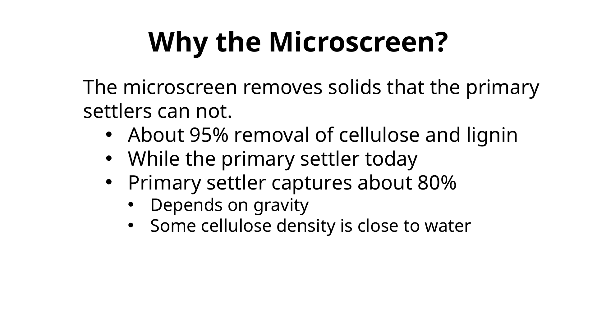

The FECR Process
FECR is best understood as a staged treatment train. The initial retrofit removes solids near the headworks. Later stages can dry the solids, destroy contaminants through pyrolysis, and produce biochar.
Raw wastewaterafter grit chamber
Microscreenalso called RBF
Screw press35–40% solids target
Heat-pump dryingoptional stage
Pyrolysisoptional stage
Biocharbridge to separate KB

Containerized process concept from the microscreen presentation.
Why the train matters
Each stage reduces the burden on the next. Mechanical dewatering is much cheaper than evaporation. Dry feedstock is much easier to transport and pyrolyze. Pyrolysis is easier to justify once drying and solids management are already working.
The site should repeatedly show the full process while allowing visitors to explore one step at a time.
FECR begins with the key enabling technology: the microscreen, also known in the scientific literature as a Rotating Belt Filter.